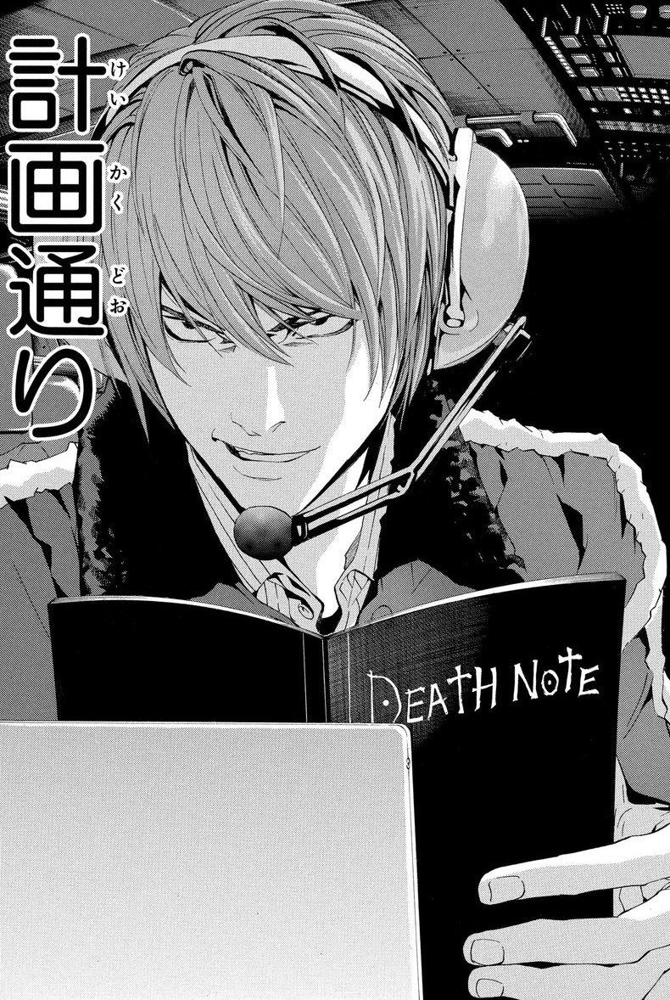

Từ một học sinh tin rằng mình có thể dùng Death Note để loại bỏ cái ác, Light Yagami dần trở thành Kira - người tự trao cho mình quyền quyết định ai đáng sống và ai phải chết.
Từ lý tưởng về công lý đến quyền lực tuyệt đối
Khi lần đầu sở hữu Death Note, Light không được xây dựng như một nhân vật chỉ có tham vọng quyền lực. Cậu xuất phát từ sự bất mãn với một thế giới mà mình cho là đầy tội phạm và tin rằng cuốn sổ có thể giúp loại bỏ cái ác. Giới thiệu chính thức của VIZ cũng đặt trọng tâm vào chính nghịch lý này: Light muốn dùng Death Note để “rid the world of evil”, nhưng đồng thời câu chuyện đặt vấn đề liệu quyền năng ấy có biến cậu thành chính thứ mà cậu chống lại hay không.
Điểm đáng chú ý là Light không phải một người được trao quyền bởi pháp luật hay một cơ chế xã hội. Cậu tự xác định ai là người đáng bị trừng phạt và tự thực hiện hình phạt. Từ đây, Death Note chuyển câu hỏi từ “tội phạm có đáng bị trừng phạt hay không?” sang một vấn đề phức tạp hơn: “Ai có quyền quyết định một người đáng bị trừng phạt?”. Quyền lực của Light vì thế không nằm đơn thuần ở khả năng giết người, mà nằm ở việc cậu có thể biến phán xét cá nhân thành một quyết định không thể đảo ngược.

Khi danh tính Kira xuất hiện, mục tiêu của Light cũng dần vượt khỏi việc tiêu diệt tội phạm. Kira trở thành biểu tượng cho một trật tự mới mà Light muốn xây dựng, trong đó chính cậu là người đặt ra tiêu chuẩn đúng - sai. Một nghiên cứu về khái niệm tội phạm, luật pháp và công lý trong manga đã chia quá trình phát triển của Light thành nhiều giai đoạn, từ do dự, giết những người bị xem là xấu, chuyển sang loại bỏ người bất đồng cho tới tham vọng thống trị thế giới.
Sự biến đổi của Light: Khi mục tiêu không còn quan trọng bằng việc giữ quyền lực
Sự tha hóa của Light không xảy ra đột ngột. Ban đầu, cậu có thể biện minh rằng những người chết đều là tội phạm và việc loại bỏ họ nhằm tạo ra một xã hội an toàn hơn. Nhưng khi L và lực lượng điều tra bắt đầu truy tìm Kira, phạm vi phán xét của Light mở rộng. Những người cản trở kế hoạch của cậu không còn được nhìn nhận đơn thuần như những người thực thi công lý, mà trở thành những chướng ngại cần loại bỏ. Chính VIZ cũng mô tả Light trong những tập đầu là người liên tục thử nghiệm giới hạn của Death Note trong khi L và cảnh sát tiến gần tới danh tính Kira.